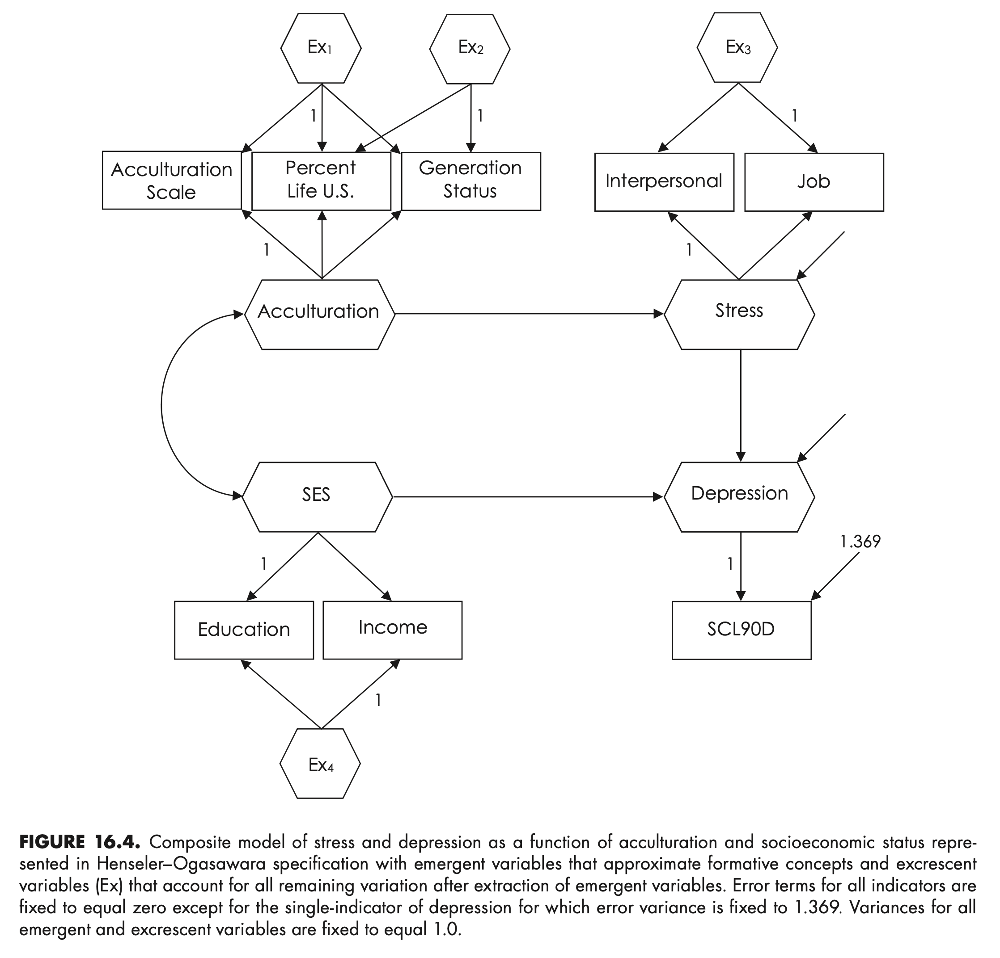

Load libraries
library(tidyverse)
library(lavaan)
library(semTools)
library(cSEM)
library(psych)Principles and Practice of Structural Equation Modeling (5e) by Rex B. Kline
library(tidyverse)
library(lavaan)
library(semTools)
library(cSEM)
library(psych)Yu, X., Schuberth, F., & Henseler, J. (2023). Specifying composites in structural equation modeling: A refinement of the Henseler–Ogasawara specification. Statistical Analysis and Data Mining: The ASA Data Science Journal, 16(4), 348-357.
Schuberth, F. (2021). The Henseler-Ogasawara specification of composites in structural equation modeling: A tutorial. Psychological Methods.

Source: Fig 16.4 (p. 302)
# input the correlations in lower diagnonal form
shenLower.cor <- '
1.00
.44 1.00
.69 .54 1.00
.21 .08 .16 1.00
.23 .15 .19 .19 1.00
.12 .08 .08 .08 -.03 1.00
.09 .06 .04 .01 -.02 .38 1.00
.03 .02 -.02 -.07 -.11 .37 .46 1.00 '
# name the variables and convert to full correlation matrix
shen.cor <- lavaan::getCov(shenLower.cor, names = c("acculscl", "status",
"percent", "educ", "income", "interpers", "job", "scl90d"))
# add the standard deviations and convert to covariances
shen.cov <- lavaan::cor2cov(shen.cor, sds = c(3.60,3.30,2.45,3.27,3.44,2.99,
3.58,3.70))# display correlations and covariances
shen.cor |> print() acculscl status percent educ income interpers job scl90d
acculscl 1.00 0.44 0.69 0.21 0.23 0.12 0.09 0.03
status 0.44 1.00 0.54 0.08 0.15 0.08 0.06 0.02
percent 0.69 0.54 1.00 0.16 0.19 0.08 0.04 -0.02
educ 0.21 0.08 0.16 1.00 0.19 0.08 0.01 -0.07
income 0.23 0.15 0.19 0.19 1.00 -0.03 -0.02 -0.11
interpers 0.12 0.08 0.08 0.08 -0.03 1.00 0.38 0.37
job 0.09 0.06 0.04 0.01 -0.02 0.38 1.00 0.46
scl90d 0.03 0.02 -0.02 -0.07 -0.11 0.37 0.46 1.00shen.cov |> print(digits = 2) acculscl status percent educ income interpers job scl90d
acculscl 13.0 5.23 6.09 2.47 2.85 1.29 1.16 0.40
status 5.2 10.89 4.37 0.86 1.70 0.79 0.71 0.24
percent 6.1 4.37 6.00 1.28 1.60 0.59 0.35 -0.18
educ 2.5 0.86 1.28 10.69 2.14 0.78 0.12 -0.85
income 2.8 1.70 1.60 2.14 11.83 -0.31 -0.25 -1.40
interpers 1.3 0.79 0.59 0.78 -0.31 8.94 4.07 4.09
job 1.2 0.71 0.35 0.12 -0.25 4.07 12.82 6.09
scl90d 0.4 0.24 -0.18 -0.85 -1.40 4.09 6.09 13.69shenHO.model <- '
# composites, excrescent variables, and indicators
# acculturation
Acculturation =~ acculscl+ start(0)*percent+ start(0)*status
ex1 =~ percent + acculscl + status
ex2 =~ status + acculscl + 0*percent
acculscl ~~ 0*acculscl
percent ~~ 0*percent
status ~~ 0*status
# SES
SES =~ educ + income
ex4 =~ income + educ
educ ~~ 0*educ
income ~~ 0*income
# stress
Stress =~ interpers + job
ex3 =~ job + interpers
interpers ~~ 0*interpers
job ~~ 0*job
# depression, fix indicator error variance
# to 1.369
Depression =~ scl90d
scl90d ~~ 1.369*scl90d
# covariance between SES and acculturation
# is a free parameter
Acculturation ~~ SES
# constrain covariances to zero
ex1 ~~ 0*Acculturation + 0*Stress + 0*SES + 0*Depression
+ 0*ex2 + 0*ex3 + 0*ex4
ex2 ~~ 0*Acculturation + 0*Stress + 0*SES + 0*Depression
+ 0*ex3 + 0*ex4
ex3 ~~ 0*Acculturation + 0*Stress + 0*SES + 0*Depression
+ 0*ex4
ex4 ~~ 0*Acculturation + 0*Stress + 0*SES + 0*Depression
# structural model
Stress ~ a*Acculturation
Depression ~ b*Stress + SES
# define indirect effect
ab := a * b
'# fit ho-specified model to data
# estimates for excrescent variables have no interpretive value
shenHO <- lavaan::sem(model = shenHO.model, sample.cov = shen.cov,
sample.nobs = 983)
lavaan::summary(shenHO, standardized = TRUE, fit.measures = TRUE,
rsquare = TRUE) |> print()lavaan 0.6.17 ended normally after 245 iterations
Estimator ML
Optimization method NLMINB
Number of model parameters 21
Number of observations 983
Model Test User Model:
Test statistic 19.334
Degrees of freedom 15
P-value (Chi-square) 0.199
Model Test Baseline Model:
Test statistic 1606.002
Degrees of freedom 28
P-value 0.000
User Model versus Baseline Model:
Comparative Fit Index (CFI) 0.997
Tucker-Lewis Index (TLI) 0.995
Loglikelihood and Information Criteria:
Loglikelihood user model (H0) -19670.378
Loglikelihood unrestricted model (H1) -19660.711
Akaike (AIC) 39382.757
Bayesian (BIC) 39485.459
Sample-size adjusted Bayesian (SABIC) 39418.763
Root Mean Square Error of Approximation:
RMSEA 0.017
90 Percent confidence interval - lower 0.000
90 Percent confidence interval - upper 0.037
P-value H_0: RMSEA <= 0.050 0.999
P-value H_0: RMSEA >= 0.080 0.000
Standardized Root Mean Square Residual:
SRMR 0.022
Parameter Estimates:
Standard errors Standard
Information Expected
Information saturated (h1) model Structured
Latent Variables:
Estimate Std.Err z-value P(>|z|) Std.lv Std.all
Acculturation =~
acculscl 1.000 3.564 0.991
percent 0.519 0.051 10.074 0.000 1.849 0.755
status 0.507 0.086 5.870 0.000 1.805 0.547
ex1 =~
percent 1.000 1.606 0.656
acculscl -0.198 0.241 -0.820 0.412 -0.318 -0.088
status 0.397 0.207 1.920 0.055 0.637 0.193
ex2 =~
status 1.000 2.686 0.814
acculscl -0.140 0.149 -0.941 0.346 -0.376 -0.105
percent 0.000 0.000 0.000
SES =~
educ 1.000 2.379 0.728
income 1.173 0.196 5.969 0.000 2.790 0.811
ex4 =~
income 1.000 2.009 0.584
educ -1.115 0.261 -4.268 0.000 -2.241 -0.686
Stress =~
interpers 1.000 2.233 0.747
job 1.440 0.122 11.798 0.000 3.216 0.899
ex3 =~
job 1.000 1.570 0.439
interpers -1.265 0.211 -5.989 0.000 -1.986 -0.665
Depression =~
scl90d 1.000 3.501 0.948
Regressions:
Estimate Std.Err z-value P(>|z|) Std.lv Std.all
Stress ~
Acculturtn (a) 0.076 0.020 3.768 0.000 0.122 0.122
Depression ~
Stress (b) 0.839 0.064 13.034 0.000 0.535 0.535
SES -0.190 0.046 -4.119 0.000 -0.129 -0.129
Covariances:
Estimate Std.Err z-value P(>|z|) Std.lv Std.all
Acculturation ~~
SES 2.447 0.367 6.674 0.000 0.289 0.289
ex1 0.000 0.000 0.000
ex1 ~~
.Stress 0.000 0.000 0.000
SES 0.000 0.000 0.000
.Depression 0.000 0.000 0.000
ex2 0.000 0.000 0.000
ex3 0.000 0.000 0.000
ex4 0.000 0.000 0.000
Acculturation ~~
ex2 0.000 0.000 0.000
ex2 ~~
.Stress 0.000 0.000 0.000
SES 0.000 0.000 0.000
.Depression 0.000 0.000 0.000
ex3 0.000 0.000 0.000
ex4 0.000 0.000 0.000
Acculturation ~~
ex3 0.000 0.000 0.000
.Stress ~~
ex3 0.000 0.000 0.000
SES ~~
ex3 0.000 0.000 0.000
ex3 ~~
.Depression 0.000 0.000 0.000
ex4 ~~
ex3 0.000 0.000 0.000
Acculturation ~~
ex4 0.000 0.000 0.000
ex4 ~~
.Stress 0.000 0.000 0.000
SES ~~
ex4 0.000 0.000 0.000
ex4 ~~
.Depression 0.000 0.000 0.000
Variances:
Estimate Std.Err z-value P(>|z|) Std.lv Std.all
.acculscl 0.000 0.000 0.000
.percent 0.000 0.000 0.000
.status 0.000 0.000 0.000
.educ 0.000 0.000 0.000
.income 0.000 0.000 0.000
.interpers 0.000 0.000 0.000
.job 0.000 0.000 0.000
.scl90d 1.369 1.369 0.100
Acculturation 12.704 0.678 18.746 0.000 1.000 1.000
ex1 2.578 0.593 4.346 0.000 1.000 1.000
ex2 7.213 0.651 11.079 0.000 1.000 1.000
SES 5.660 1.105 5.123 0.000 1.000 1.000
ex4 4.037 1.087 3.712 0.000 1.000 1.000
.Stress 4.912 0.582 8.447 0.000 0.985 0.985
ex3 2.463 0.543 4.540 0.000 1.000 1.000
.Depression 8.603 0.450 19.126 0.000 0.702 0.702
R-Square:
Estimate
acculscl 1.000
percent 1.000
status 1.000
educ 1.000
income 1.000
interpers 1.000
job 1.000
scl90d 0.900
Stress 0.015
Depression 0.298
Defined Parameters:
Estimate Std.Err z-value P(>|z|) Std.lv Std.all
ab 0.064 0.017 3.770 0.000 0.065 0.065
# predicted covariances
lavaan::fitted(shenHO)
# predicted correlations
lavaan::lavInspect(shenHO, "cor.lv")
lavaan::lavInspect(shenHO, "cor.ov")
# residuals
lavaan::residuals(shenHO, type = "raw")
lavaan::residuals(shenHO, type = "standardized.mplus")
lavaan::residuals(shenHO, type = "cor.bollen")